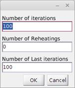
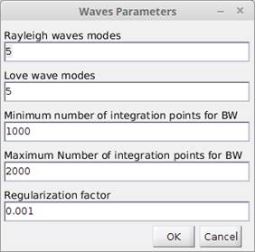

User Manual
Version 0.3
[go to the
latest online version]
ContenTS
Installation
in MS Windows 64 bit
Installation
in GNU/Linux 64 bit
Installation
in OS X Mac 64 bit
Overview
HV-Inv is a computer code for forward
calculation and inversion of HV spectral ratios of ambient noise (HVSRN) based
on the diffuse field assumption (DFA, Sánchez-Sesma
et al., 2011). It takes advantage of the recently connection between the HVSRN
and the elastodynamic Green's function which arises from the ambient noise
interferometry theory.
The software supports joint inversion of HVSRN and
dispersion curves by using several local and global algorithms: Monte Carlo
sampling simulated annealing, simplex downhill and interior-point.
References:
García-Jerez, A., Piña-Flores, J., Sánchez-Sesma, F.J., Luzón, F., Perton, M. (2016). A computer code for forward
computation and inversion of the H/V spectral ratio under the diffuse field
assumption, Computers & Geosciences 97, 6778.
Sánchez-Sesma, F.J.,
Rodríguez, M., Iturrarán-Viveros, U., Luzón, F., Campillo, M., Margerin, L., García-Jerez, A., Suarez, M., Santoyo, M.A., Rodríguez-Castellanos, A. (2011). A theory
for microtremor H/V spectral ratio: application for a layered medium,
Geophysical Journal International 186, 221-225.
García-Jerez A., Luzón F.,
Sánchez-Sesma F. J., Lunedei
E., Albarello D.,
Santoyo M. A., Almendros J. (2013).
Diffuse elastic wavefield within a simple crustal model. Some consequences for
low and high frequencies. Journal of Geophysical Research 118(10), 5577-5595.
Piña-Flores,
J. (2015). Cálculo e inversión del cociente H/V a partir de ruido ambiental. Unpublished M.Sc. Thesis, Universidad Nacional Autónoma de México, México DF,
76 pp. In Spanish.
Hardware: 1GHz CPU, 512 MB RAM, 200 MB of free space on HDD
OS: The HV-Inv_Beta has been tested under the following OS configurations:
Windows 8 64 bit Windows 8.1 64 bit Windows 10 64 bit
GNU/Linux 64 bit
OS X Mac 64 bit
Please follow these instructions to install HV-Inv 1.0 Beta on your PC:
Installation in MS Windows 64 bit
Method 1: from compiled version
1. - Before using the compiled version you need to install Matlab Runtime R2015a (v8.5) (free)
2.- Download the latest installation of HV-Inv Beta corresponding to Windows 64 bit operating system from the website: http://www.ual.es/GruposInv/hv-inv/ and save it to your computer.
Extract the downloaded compressed file into a folder. Use WinZip or another uncompressing utility.
3. - Run HVInvBeta.exe.
Note: On Windows 7 or later you might be required to run the HVInvBeta.exe as Administrator.
Method 2: run from source code
If you plan to use the source files then you need to install a licensed version of Matlab R2015a and run HV_Inv_Beta.m.
Method 1: from compiled version
1. - Before using the compiled version you need to install Matlab Runtime R2015a (v8.5) (free)
2.- Download the latest installation of HV-Inv Beta corresponding to Linux 64 bit operating system from the website: http://www.ual.es/GruposInv/hv-inv/ and save it to your computer.
Extract the downloaded compressed file into a folder. Use WinZip or another uncompressing utility.
3. - Run run_HVInvBeta.sh. You need to modify the access permissions to the whole installation folder (sudo chmod R +rwx <foldername>) and enter from a terminal the following command (see readme file included in this package):
sudo ./run_HVInvBeta.sh /usr/local/MATLAB/MATLAB_Runtime/V85
See note on OpenMP below
Method 2: run from source code
If you plan to use the source files then you need to install a licensed version of Matlab R2015a and Run HV_Inv_Beta.m.
See note on OpenMP below
Method 1: from compiled version
1. - Before using the compiled version you need to install Matlab Runtime R2015a (v8.5) (free)
2.- Download the latest installation of HV-Inv Beta corresponding to MAC 64 bit operating system from the website: http://www.ual.es/GruposInv/hv-inv/ and save it to your computer.
Extract the downloaded compressed into a folder. Use WinZip or another uncompressing utility.
3. -Run run_HVInvBeta.sh. You need to modify the access permissions to the whole installation folder (sudo chmod R +rwx <foldername>) and enter from a terminal the following command (see readme file included in this package):
sudo ./run_HVInvBeta.sh /Applications/MATLAB/MATLAB_Runtime/V85
See note on OpenMP below
Method 2: run from source code
If you plan to use the source files then you need to install a licensed version of Matlab R2015a and run HV_Inv_Beta.m.
See note on OpenMP below
Note:
The forward computation program, called HVf has been built under MacOS
with gfortran (gcc 5.2.0)
In this case, parallel computation (via OpenMP) has been disabled to provide a standalone binary,
avoiding libraries.
To enable the parallel version of the software
(recommended) please follow these steps:
i) install gfortran 5.2.0 in the
default folder in order to setup OpenMP libraries
(https://gcc.gnu.org/wiki/GFortranBinaries)
ii) replace HVf (the executed file) with the parallel binary called HVf_parallel. These files are in the exe folder (write mv HVf_parallel HVf from that folder).
The Principal Window of HV-Inv 1.0 Beta contains seven panels described below
Links: Menu Toolbar Model Data and current best modelling Select target data Model Parameter bounds Misfit History
Menu
Workers (On /Off). Enables the processors to make the initial random search and some inversion processes in parallel (for Modified Simulated Annealing inversion method).
Exit. Close
the application.
Inversion settings
Inversion Type. Select the type of inversion algorithm, by default, Montecarlo sampling is selected.
Global Optimization. Global inversion algorithms.
§ Montecarlo sampling.
Number of iterations. Number of iterations for the inversion.
§ Simulated annealing.
- Márcovs chain length. Number of elements in the Márcovs chain (Number of iterations for which temperature is kept constant).
- Number of temperatures. Number of Márcovs chains. The temperature falls from a chain to another.
- Last Márcovs chain length. Number of additional models evaluated at the lowest temperature reached in order to assess the velocity profile uncertainty.
§ Modified Simulated Annealing

- Number of iterations. Number of iteration for a model series with decreasing temperature.
- Number of Reheatings. Number of times the system is reheated, and a new chain of Number of iterations models begins.
- Number of last iterations. Number of additional models evaluated at the lowest temperature reached in order to assess the velocity profile uncertainty.
Local Optimization Local inversion algorithm
§ Simplex Downhill and Interior-Point methods
- Maximum number of iterations allowed. Maximum number of iterations of the algorithm.
- Maximum number of evaluations allowed. Maximum number of evaluations of the cost function (misfit function).
- Termination tolerance on the function value. Minimum meaningful misfit decrement
- Termination tolerance on parameters. Minimum meaningful variations in model parameters
Settings
Initial Population. Represents the number of random models tested in the whole range of model parameters during a random search stage. The best model found is used as initial model for the subsequent inversion methods. If you enter zero, you will be requested to enter a specific initial model.
Initial Temperature. This parameter directly affects the probability of accepting a model when the cooling schedule starts. (Available only for the Modified Simulated Annealing and the Simulated Annealing methods). The box asks for the probability of accepting a relative misfit increment (i. e. normalized by the misfit of the initial model).
Cooling Schedule. This value controls the descent of the "Temperature" parameter to progressively reduce the acceptance probability of the models for which the misfit is worse than for the current one. The box asks for Ti+1 / Ti ratio (Available for the Simulated Annealing and the Modified Simulated Annealing only).
Perturbation Range. This value controls the maximum size of the perturbation range around the current model, wherein the next model is generated. The maximum variation of a given parameter around the current model is plus/minus a Perturbation range percent of the corresponding full range stated in the Model Parameters table. Available only for the Monte Carlo sampling, Simulated Annealing and the Modified Simulated Annealing methods.
Low Parameters Zone. Allows low velocity zones.
Allow low-velocity Vs zones. Allows low velocity zones to exist (LVZ) for Vs.
Allow low-velocity Vp zones. Allows low velocity zones to exist (LVZ) for Vp.
Allow low-density zones. Allows low density zones to exist (Disabled in this version).
Maximum Vs for halfspace. Excludes models for which halfspace does not have the greater Vs.
Wave Parameters. Wave
parameters for the direct calculation of the HV curve.

Ø Rayleigh waves modes. Maximum number of Rayleigh wave modes to be considered in the forward calculation of the HV curve (The number zero indicates no contribution of the Rayleigh waves).
Ø Love waves modes. Maximum number of Love wave modes to be included in the forward calculation of the HV curve (The number zero indicates no contribution of Love waves).
Ø Minimum number of integration points for BW (Body waves). Minimum number of samples to evaluate the body waves contribution.
Ø Maximum number of integration points for BW (Body waves). Maximum number of samples to value the body waves contribution.
Note: Enter zero in this filed to disable calculation of body waves contributions (time consuming).
Ø Regularization factor. Value used to generate small imaginary parts for frequencies
or wavenumbers to stabilize body wave integrals. The default value 0.01 is
recommended. A value of zero is also admissible for most of the models.
View
Parameters space. The relationship between the model misfit and particular model parameters is separately studied. Each panel represents a model parameter. The existence of well constrained and poorly constrained properties can be assessed in this way
Models. This sub-menu displays the inversion results.
Help
About. This sub-menu displays information about HV-inv 1.0 Beta.
User Manual. This sub-menu opens the "User Manual"
file.
Toolbar
Print Figure. This tool prints out the main window.
Zoom in, Zoom out. Zoom control buttons.
Pan. This tool allows you to navigate through the graphics.
Data Cursor. This
tool shows the X Y coordinate values of any point of the curves.
Zoom in/out, Pan & Data cursor
These buttons are available for "Model, Graphics and Misfit History panels only.

Loads the data of the experimental HV curve from a * .txt file in the following format:
|
Frequency |
Amplitude H/V |
Standard deviation |
|
0.1 |
0.5 |
0.2 |
|
0.2 |
0.52 |
0.15 |
If the file lacks of standard deviation column, the
software let you choose between the following three methods to generate assumed
standard deviation values:
STANDARD DEVIATION GENERATION (STDG) FOR H/V
Constant (Units). The input in the box is assumed to be a constant standard deviation for all frequencies, with same units as the corresponding target.
Proportional (%). The standard deviations are assumed to be proportional to the data value (H/V value or velocity). The input in the box is interpreted as a percentage.
Cancel. The standard deviation is assumed to be one target unit for all frequencies.
Target DC
Loads the data of the experimental
dispersion curve from a * .txt file in the following format:
|
Frequency |
Velocity (m/s) |
Standard deviation |
|
0.1 |
1000 |
10 |
|
0.2 |
1010 |
15 |
To identify the type of dispersion curve selected, you have to enter the following information:
Polarization. Type of polarization (Rayleigh or Love).
Velocity. Type of velocity (Phase or Group).
Mode Index. Number of the mode corresponding to the provided dispersion curve data (only fundamental mode is available in the current version).
Sample weight. Check on this box to equalize the weight of the two observables in joint inversions, regardless the respective number of samples. Weight. This value modulates the relative influence of the observables on the cost (misfit). A 0 value indicates that the dispersion curve is not taken into account. A 0.5 value indicates that all the points have the same weight in the cost function, regardless which target they represent. A value of 1 indicates that the dispersion curve takes the whole weight in the inversion.
Next curve. Adds higher-modes dispersion curves (Disabled).
Open File.
Loads the files of higher-modes dispersion curve (Disabled).
STANDARD DEVIATION GENERATION (STDG) FOR DC
Constant Standard deviation (Units). The input is assumed to be a constant standard deviation for all frequencies.
Proportional Standard deviation (%). The standard deviations are assumed to be proportional to the data value (H/V value or velocity). The input in the box is interpreted as a percentage.
Cancel Standard deviation. The
standard deviations are assumed to be one target unit for all frequencies.
Target HV & DC
Loads the data of the experimental HV and
dispersion curves. This button enables joint inversion.
Forward H/V
Shows the HV forward computation interface.
Start Inversion/Stop Inversion
Starts or stops the inversion process.
This panel contains the elastic parameters limits (a priori information).
You
should enter the number of layers, including the halfspace.
You
should enter the minimum and maximum value of the elastic parameters. To fix
the value of a parameter to a constant, enter the same value as minimum and
maximum.
Load Parameters
Loads the elastic parameters limits from a *.para file with the following format:
# Number of layers
3
# Min-thickness Max-thickness Min-Vp Max-Vp Min-Vs Max-Vs Min-Density Max-Density Min-Poisson Max-Poisson
10 50 400 6000 200 3400 2000 2000 0.25 0.4
10 50 400 6000 200 3400 2000 2000 0.25 0.4
0 0 400 6000 200 3400 2000 2000 0.25 0.4
Lines starting with # are not read (comments)
Use 0 for halfspace thickness
Save Parameters
Saves the elastic parameters limits in a *.para file with the format shown in the previous section:
Graphics panel shows the target HV and dispersion curves (black lines). Blue lines are the current best-fitting curves. The horizontal axis represents the frequency (Hz) and the vertical axis represents the amplitude or velocity. The type of axis scales (linear or logarithmic) can be modified by pressing the secondary button and selecting the scale type.
The Model panel shows the current best-fitting velocity profiles. The horizontal axis represents wave velocity and vertical axis represents depth. Vs and Vp profiles are shown with red solid line and the red dashed line, respectively.
The Misfit History panel shows the evolution of the misfit along the inversion process. The magenta line represents the behavior of the cost function. The blue line represents the historical minimum of the cost function. The red line represents the temperature parameter controlled by the cooling schedule. The temperature parameter is shown for the Simulated Annealing and the Modified Simulated Annealing methods only.
The Inversion Report panel shows the final information about the inversion process.

The Forward calculation main Window contains five panels described below. This interface lets the user simulate the H/V ratio for a particular model and check the influence of each model parameter and of the computation settings.

Links: Menu Toolbar
Model Parameters Wave
Parameters Vp/Vs/dens. Profile
HV ratio
# Layers
Enter the number of layers including the
halfspace.
parameters TABLE
Enter the elastic parameters values.
Vp,
Vs and Poissons ratio are interdependent. The behavior of the table when one
of these quantities is modified depends on the keep Poisson ratio settings, described here.
LOAD / SAVE MODEL
Loads a model from a file instead of filling the
table manually. Saves the model currently stored in the table to a file. This
model is shown with blue color in the central panel.
LOADED MODEL H/V
Computes the HV curve for the loaded model shown
with black color in the central panel. The result will be shown with black line
in the HV Ratio panel. Uncheck this
box to delete the line.
Freq-min (Hz)
Represents the minimum frequency for calculation of the HV curve.
Freq-max (Hz)
Represents the maximum frequency for calculation of the HV curve.
Samples
Represents
the number of samples between the minimum and maximum frequency values for the
HV curve.
Rayleigh wave modes
Maximum number of Rayleigh wave modes to be included in the forward calculation of the HV curve (Enter zero to ignore the contributions of Rayleigh waves).
Love wave modes
Maximum number of Love wave modes to be included in the forward calculation of the HV curve (Enter zero to ignore the contributions of the Love waves).
BW Integration points
Represents the discretization of the wavenumber
integrands for calculation of the body waves contribution. If you dont need the
body waves contribution, enter zero in this box.
Sampling
Select the sampling type
- Linear. Computes the HV curve for evenly spaced frequencies
- Log. Computes the HV curve for evenly spaced frequency logarithms.
Compute H/V
Computes the HV curve for the model in the table.
Save HV *.txt
Saves the HV curve values in a *.txt file with the following format:
|
Frequency |
Amplitude H/V |
|
0.1 |
0.5 |
|
0.2 |
0.52 |
|
|
|
Menu & Toolbar
Load HV
data Loads an H/V curve
from a file to be used as reference (e.g. for manual inversion of that curve).
H/V files with or without
standard deviation are both admissible.
Regularization factor.
Value used to generate small imaginary parts for frequencies or wavenumbers to
stabilize body wave integrals. The default value 0.01 is recommended. A value
of zero is also admissible for most of the models.
Exit Close
the window.
Toolbar
Print Figure. This tool prints out the main window.
Zoom in/out, pan & data cursor tools
are also available. Zoom in and return to original view have been
enabled for the click and double-click on the scroll wheel button.
Vs / Vp / Density Profile
- This panel shows the model stored in the
Parameters table with a blue line. The vertexes occupying odd positions (seen
from the top) can be manually moved by using the mouse. To do so, choose a
vertex and then drag and drop with the primary button, while the pointer is
showing a circumference.
- Double-click on the panel background (while the
standard pointer is shown) to compute the theoretical H/V curve for the current
model, just as pressing the Compute HV button.
- After loading a model from a file, a static
copy of that profile is preserved for reference in this panel, together with
the movable blue model. The loaded model is shown with black line. The
corresponding H/V will be shown with black line in the HV Ratio panel after checking the Loaded
Model HV box.
Mouse ButtonS
primary button Double click computes the
theoretical H/V curve for the current model, just as pressing the Compute HV. Use a single
click to exit from the contextual menu.
SCROLL WHEEL button Zoom in and zoom out to original view have been enabled for click and double-click on the scroll wheel button, respectively.
SECONDARY button It shows the contextual menu
described below and turns off the zoom if activated.
The following
menu is shown by clicking on the Profile
Panel background with the secondary button of the mouse. It provides suitable
options for controlling on the model display and modification and the drag and drop method.
Lock X/Y Axis Keeps either the layer thicknesses (case Y)
or the model property shown with the blue profile (case X) unchanged during a drag and drop procedure. It prevents for
undesired variations in the parameters during this manual operation.
Keep poisson
ratio If this option is checked, Vp
or Vs are changed automatically when the user moves the other velocity, in
order to keep de Poissons ratio unchanged. If this option is not checked, the
Poissons ratio is recomputed when the user acts on a (single) velocity. Note
that this choice also applies if the table is edited directly.
ChangE one Thickness
If this option is checked, the thickness of the layer located immediately above
a movable vertex is changed when the users drags the vertex up and down. The
thicknesses of the remaining layers are preserved.
Move one interface In this case, the user can change the depth of an interface while the positions of the remaining interfaces are preserved. Therefore, this action involves variation in thickness of the layers located immediately above and below the vertex, preserving the sum of their thicknesses.
Vp/Vs/density Profile Use these options to choose
the model property to be shown in the graphic profile(s).
Keep HV ratio If this option is checked,
the modifications made by means of the drag and drop method will preserve the
H/V curve. If Vp or Vs profile are displayed, then
all layer thicknesses and velocities (both Vp and Vs)
will be scaled by the same factor. If density profile is being displayed, the
only change allowed is rescaling the densities by a common factor.
- The HV ratio panel shows last computed
HV curve with a blue line. This curve is updated by pressing the Compute HV button or double-clicking on the Profile panel background.
- If a model has been loaded from file and the Loaded Model HV box has been checked, the
corresponding synthetic ratio will be displayed here with a black curve.
- If an auxiliary (e.g. experimental) H/V curve
has been loaded by means of the Load HV Data option, the
corresponding synthetic ratio will be displayed with a dashed red curve.
- Horizontal axis represents frequency (Hz) and vertical axis represents amplitude. If you prefer, the type of scales can be modified by pressing the secondary button and selecting the scale type.